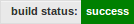

一般的公司一般都有一个或者多个中央Git Server，托管着所有项目代码；同时当一个项目很大，由许多个工程组成，例如Tizen和Android，那么一般还有Continuous Integration(CI)在有人push代码到工程时编译整个项目，编译出错一般CI会发邮件给提交者和管理者，从而可以及时修正错误。
Git Server安装与使用
Git server很多，列举一部分：
Windows
- GitStack：免费版只能有两个账号
- SCM Manager
Linux
- GitLab
- Git-Deamon
- Git使用-bare生成
获取与安装
这里使用gitlab，到这里下载bitnami gitlab一键安装包。安装非常简单，只需要添加可执行权限然后用sudo ./XXX.run 执行即出现图形化的安装向导。在安装过程中需要设置用户名和密码用于后面配置使用。
gitlab的使用
直接用IP地址或者网址登陆即可。例如：http://192.168.1.120，要求用户名和密码时使用安装时输入的用户名和密码。
检查状态：
$ sudo /home/git/gitlab-shell/bin/check
Check GitLab API access: OK
Check directories and files:
/opt/gitlab-6.3.0-0/apps/gitlab/repositories: OK
/home/git/.ssh/authorized_keys: OK
/opt/gitlab-6.3.0-0/redis/bin/redis-cli: OK
从上面可以看到repository的位置/opt/gitlab-6.3.0-0/apps/gitlab/repositories。既然知道了repository在哪，那么我们就可以导入repo了。
Repository的导入
什么时候需要导入Repository？
以前要想sync下Android的整个代码，需要极长的时间，现在要想repo sync下Tizen的代码，在国内一般会比较困难，经常出现unexpected hang之类的错误，就算写个sync的脚本不断的去sync结果也很可能是好几天都无法sync成功。除此之外，我们很可能需要更改代码，而这个代码很可能并不愿意push到Tizen Gerrit去，这个时候，很可能就需要自己搭建一个本地的repository供开发人员使用。
如何导入一个远程仓库
第一步：在本地生成一个bare仓库
git clone --bare PathofGitReop.git XXXX.git
参考Pro Git
第二步：拷贝bare repository到gitlab的repositories中
cp XXX.git /opt/gitlab-6.3.0-0/apps/gitlab/repositories/
第三步：使用
bundle exec rake gitlab:import:repos RAILS_ENV=production
参考Gitlab Wiki。
另外还可以在新建project中添加：

将repo切换到其他地方
让gitlab同步其他repository 参考stackoverflow上的这个问题回答
#如何导入一个本地的clone代码
有一个.git的git clone目录，就是一个repository，因此可以从这个repository clone代码。
git clone user@http://IP Address/Path to the Git clone dir
git clone git@172.26.188.175:hexiongjun/uboot-imx.git
git remote add origin git@172.26.188.175:hexiongjun/test.git
git remote rm origin
如何导入一个本地的用git clone --mirror产生的bare仓库
git remote rm origin
git remote add origin git@IP:user/XXX.git
git push -u origin master
git push -u origin otherbranch
当然也可以完全不用这么麻烦，因为.git目录就是bare repository。所以也可以直接将这个copy过去。
注意就现在这个版本（6.3.0），gitlab还不支持导入git协议的reop。
持续集成(Continues Integration)
持续集成(△2)，是一个在有人提交文件后对整个project不断编译构建的系统。Jenkins是比较有名的持续集成系统，Gitlab也有一个CI。在安装的时候就默认会选择上。
在安装完成后可以进入到:http://IP or Hostname/githubci即可进入集成系统的管理web。
添加权限
gitlab ci安装好后会创建一个叫做gitlab_ci的用户，ci要build gitlab中的项目第一不就是从gitlab中取一个项目，gitlab_ci用户需要有获取project的权限。将/home/gitlab_ci/.ssh/id_rsa.pub中的内容复制粘贴到需要被ci 添加的项目中。

编译配置
在编译脚本中如果需要配置环境变量，那么就需要注意了，如下图，因为build scripts中的每一行都是在一个单独的sh环境中运行，因此，需要将多条命令用&&整合成一条。另外在侧边可以输入branch分支。
另外还有一点，在现在这个gitlabCI版本中，scripts中是不允许空行的。否则会出现Diretory not found的错误提示，参考这里。
点击此页面可以跳到对应的CI中。
如果编译出错，那么还可以retry,先跳转到Builds页面：

然后再右侧有一个Retry按钮：

对应的编译log就在此页面中。而在gitlab对应的项目网页中，页面右侧将有一个build success的图片： 
这个图片的连接可以在这里找到：

新添加project到CI
在新添加任务到CI中后，需要为其分配runner来编译，点击下面图中Token，切换到这个runner：

然后enable刚才新添加的项目。然后再对这个runner assign to all 即可。

参考：
△2：CI
△3: 可以用与gitlab的表情
△4: Bare repo释义；另外比较简洁的理解参考Pro Git
△4: bitnami还提供其他许多软件的一键安装包,例如LAMP RedMine等等。
License
This blog post is licensed under a Creative Commons Attribution-No Derivative Works 3.0 Norway License.

Comments !